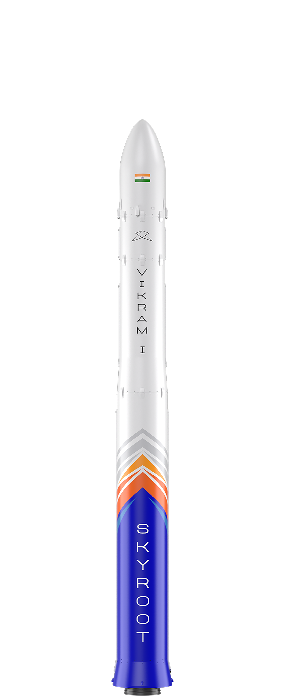
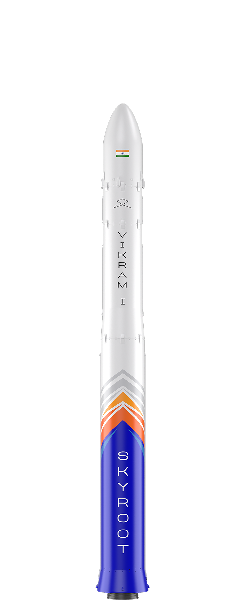

VIKRAM SERIES
Vikram - named after Dr. Vikram Sarabhai, founder of the Indian Space Program - is a series of modular Space launch vehicles especially crafted for the small satellite market. More than 20,000 small satellites are estimated to be launched in the coming decade, and Vikram series is designed to enable this through unprecedented mass producibility an affordability. The leading technology architecture of Vikram vehicles offers unique capabilities like multi orbit insertion, interplanetary missions; while providing customized, dedicated and ride share options covering a wide spectrum of small satellite customer needs. Launching satellites to space will soon become as easy as booking a cab - Quick, precise and affordable!
 


PAYLOAD
480 kg to 500 km Low Inclination Orbit
290 kg to 500 km SSPO
595 kg to 500 km Low Inclination Orbit
400 kg to 500 km SSPO
815 kg to 500 km Low Inclination Orbit
560 kg to 500 km SSPO
ARCHITECTURE
Highly reliable solid propulsion stages
with proven design heritage.Miniaturized and Modern
Avionics. Ultra-Lowshock Pneumatic separation.
Advanced Cryogenic Methalox engine
replaces upper stage of Vikram 1 .
An Upgrade to Vikram 2 With Additional
low cost Strapped on Solid Rocket Boosters
ECONOMIC
Lowest cost in the payload segment
Upper stage cryo-engine with re-start capability enables multi-orbit insertions.
RESPONSIVE
Requires Minimal range infrastructure.
Can be assembled and launched within
24 hours from any launch site.
Requires Minimal range infrastructure. Can be assembled and launched within
72 hours from any launch site.
72 hours from any launch site.